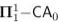

Vittorio Cipriani
PhD student at the University of Udine*PhD thesis submitted on 31/01/23
Institutional e-mail: vittorio.cipriani@uniud.it
Personal e-mail: vittorio.cipriani17@gmail.com
Papers
- Nikolay Bazhenov, Vittorio Cipriani and Luca San Mauro Calculating the Mind Change Complexity of Learning Algebraic Structures In: Berger, U., Franklin, J.N.Y., Manea, F., Pauly, A. (eds) Revolutions and Revelations in Computability. CiE 2022. Lecture Notes in Computer Science, vol 13359. Springer, Cham. https://doi.org/10.1007/978-3-031-08740-0_1;
- Nikolay Bazhenov, Vittorio Cipriani and Luca San Mauro Learning algebraic structures with the help of Borel equivalence relations Theoretical Computer Science, 951:113762, 2023, available at https://arxiv.org/abs/2110.14512
- Vittorio Cipriani, Alberto Marcone and Manlio Valenti The Weihrauch lattice at the level of : the Cantor-Bendixson theorem, submitted. Available at https://arxiv.org/abs/2210.15556;
- Vittorio Cipriani and Arno Pauly The uniform computational content of the (induced) subgraph problem, in preparation.
- Vittorio Cipriani and Arno Pauly The complexity of finding supergraphs, submitted.